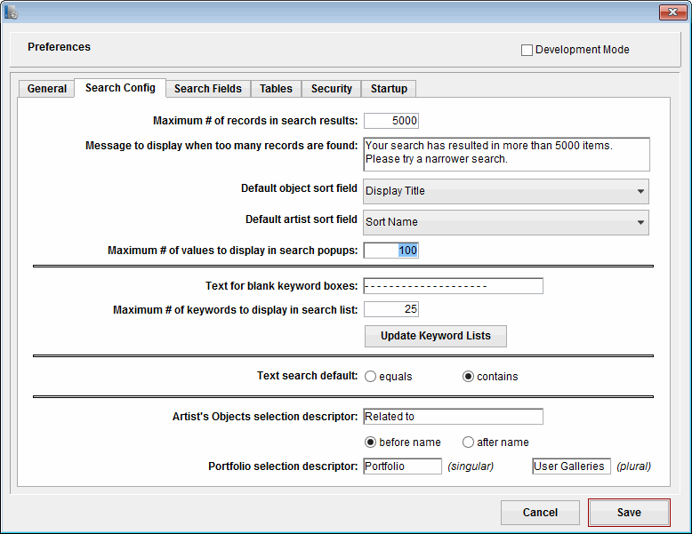

To set preferences at any time after installing the kiosk, choose Preferences from the EmbARK Web Kiosk File menu or click the Preferences button on the splash screen.
The Preferences dialog box will appear, containing six separate tabs; click any tab to display different preference settings. After changing preferences, click Save to close the Preferences dialog box. Your settings will be saved in a file called Preferences.txt in the EmbARK Web Kiosk Templates folder.
The following sections describe each of the individual settings.
Notes
- No Preferences adjustments should be required for the kiosk to run. These are all optional configurations for customizing a kiosk site.
General Tab
The General Tab contains settings that pertain to the server.
Default Page
This setting specifies the relative URL to which a visitor will be forwarded if they request the kiosk web root without a specific page (e.g. http://my.kiosk.com/). This should usually be set to whatever functions as the site's "home page".
The default value is default.htm. To set Browse the Collections as the default, enter "IT_-1.htm". To set the Portolio page as the default, enter "portfolioindex.htm".
|
Convert URLs to active links
This setting enables the translation of plain text into HTML. HTTP or FTP addresses are converted to live links; carriage returns are converted to their equivalent HTML code so that they render on the web page.
The default value is checked.
|
Viewed table and field names
This setting allows the template designer to use the "Viewed" table and field names from EmbARK when customizing the Templates. Prior to EmbARK 6.0, this was the standard method for Template design. However, as internal field names always remain fixed, using them ensures that data will not suddenly disappear from the Kiosk if a field is unexpectedly changed.
The best place to view internal field names is in EmbARK by going to the File menu, selecting "File and Field Names", then viewing the internal field name column (on the left).
The default value is unchecked.
|
Media Directory URL
If your images are stored on a separate web server, enter the URL for the folder here (for example, http://www.myServer.com/KioskImages/).
The default value is /Media/. This setting makes use of the internal WebFolder.
|
Media Directory
The Media Directory is the fully qualified local path to the Images directory. It is used by the Thumbnail/Preview Export process to determine where the image files should be sent. (See Generating Thumbnails and Previews for more information.)
The default value is the local path to the Media subdirectory of the EmbARK Web Kiosk directory. Click the Browse button to navigate to the Media folder inside of the WebFolder and then click Choose to select it. Note: UNC file paths are not supported.
|
Graphics URL
If your kiosk graphics are stored on a separate server, enter the URL for the folder here (for example, http://www.myServer.com/KioskGraphics/).
The default value is /graphics/.
|
Store all images in a single directory.
If you prefer to copy images to the web server but can not maintain the original image path as originally linked to EmbARK, Kiosk can be configured to flatten the filepath directory structure and look for all files at the root of the Images, Thumbnails, Previews and Zoom folders.
The default value is unchecked.
|
SMTP Server
|
If you anticipate using the SUBMITEMAIL function, enter the name of your SMTP Server here. Note: Support of mail servers is not covered under the EmbARK Technical support agreement. Some users have found success installing an SMTP mail server application on the same machine as the kiosk application.
|
SubmitFile Delimiters
If you anticipate using the SUBMITFILE function (for building forms, enter the ascii values for delimiters for the text file here.
By default, the file will be tab delimited: 9 (tab) between fields, and 13 (carriage return) between records.
|
Datafile
|
The path to the datafile that kiosk is publishing is displayed.
|
Reset for EmbARK Button
It is bad practice to open a datafile in EmbARK after it has been opened in the EmbARK Web Kiosk. It can cause unexpected problems or data loss. In the kiosk you should always use a copy of the EmbARK datafile.
There is a flag in the datafile that tells EmbARK when a datafile has been opened by the kiosk. This is designed to help prevent accidental datafile swaps.
However, there may be occasions when it is necessary to open a kiosk datafile in EmbARK. In these cases, clicking Reset for EmbARK will reset this flag.
|
Fast Indexes
This button triggers the remaking of indices that are optimized for query speed.
The first time you open any copy of a datafile in the kiosk, you will be prompted (unless Startup Defaults have been turned on) to convert traditional indices to fast indices. If you cancel that process at startup, you can trigger it later by clicking this button.
(See Datafile Initialization for more details.)
|
Open Log
|
The Connection Log displays the most recent hits to the kiosk. It opens automatically at startup. If you close the log window, clicking this button will reopen it.
|
Export Images
Clicking this button triggers the kiosk to verify that thumbnails and previews exist for each web accessible surrogate, index tree and portfolio image in the datafile, and to generate the images that are missing.
The first time you open any copy of a datafile in the kiosk, you will be prompted (unless Startup Defaults have been turned on) to run this process. (See Datafile Initialization for more details.)
(See Generating Thumbnails and Previews for more details.)
|
Reset to Defaults
Clicking Reset to Defaults applies the default settings for all kiosk preferences, overwriting any changes you have made.
Notes
- The default settings are automatically saved as they are loaded into the Preferences form. Previous settings can not be retrieved.
|
Web Server Prefs
This button provides access to the full set of 4D web server settings. Most of these settings should not be changed unless otherwise instructed. The primary reason to click this button is if you need to reset the port id on which the web server operates. This is sometimes necessary when you have multiple web serving applications running off of the same machine. The button will automatically take you to the page where you can change the TCP Port. This setting specifies the port on which the Kiosk will operate. Typically, it will run on the default port "80". After changing the number, click YES to the prompt to restart the web server.
On Macintosh OS X, ports 0-1023 are reserved for the "root" user. In order to use a port within this range, a system administrator will need to respond to the prompt to Authenticate. After verification, restart the Web Kiosk application. Note: This same function can be accomplished by using the Pseudo utility.
The Web Server settings may also be used to allocate more memory (RAM) to the application. GO to the Database -> Data Management section and set the Minimum Size and Maximum Size (dependant upon the amount of RAM available on your server).
|
|
Search Config Tab
The Search Config tab contains settings that pertain to the various Search options that are available in the default Kiosk templates.

Maximimum # of records in search results
Enter a maximum number of search results to display per page. Users will be able to click navigation buttons to view subsequent pages.
The default value is 5000.
|
Message to display when too many records are found.
|
The text typed in this box will display when the user performs a search that has results exceeding the value in the Maximimum # of Records in Search Results box below. Typically, this message should be written to inform the user to perform a more specific search that will return a smaller number of records.
|
Default object sort field
Select an object field from the popup. When a search is performed, objects will be sorted by this field by default. This value can be overwritten by setting a Sort parameter on the search form.
The default value is Display Title.
|
Default object artist field
Select an object field from the popup. When a search is performed, objects will be sorted by this field by default.
The default value is Sort Name.
Maximum # of values to display in Quick Search popups
Enter a maximum number of values in the box. If the number of values exceeds what you enter here, choices will be displayed according to the starting letter or number.
The default value is 100.
|
Text for blank Keyword boxes
This text will display in the Keywords Found and Keywords Selected boxes when no keywords are found or selected
The default value is - - - - - - - - - - - - - - - - - - - -.
|
Maximum # of keywords to display
Enter a number in the box. If a Find Keywords command would return more than this number of keywords, the user will be prompted to enter additional letters to narrow the search criteria.
The default value is 25.
|
Update Keyword Lists
Clicking Update Keyword Lists causes the kiosk to loop through each keyword in the datafile to determine which ones are linked to web accessible objects. This enables the keyword search to display only those keywords that will return results.
The first time you open any copy of a datafile in the kiosk, you will be prompted (unless Startup Defaults have been turned on) to run this process. (See Datafile Initialization for more details.)
|
Text search default
|
This Boolean setting determines whether the values entered for the Custom Search will be queried as an equal (exact match) or contains.
|
Artist's Objects Selection Descriptor
|
Enter a text value to display in the Selection description that displays with the Artist's Objects kiosk tag, e.g. Related to will be inserted before the artist name, Picasso, to create "Related to Picasso".
|
Portfolio Selection Descriptor
|
Enter a text values to display in the Selection description that displays with the {Portfolio} kiosk tag, e.g. Portfolio will be inserted before the name of the portfolio grouping. This setting is useful if you wish to use a term other than "Portfolio" on your Kiosk. The pluralized version of the term is used to display the portfolio description at the top of the SharedPortfolioIndex.htm page (aka Community Portfolios).
|
|
Search Fields Tab
The Search Fields tab provides all the search field selection functionality that was previously located in EmbARK System Administration. The popup allows for configuration of Quick Search, Object Advanced Saerch, and Artist Advanced Search.
Quick Search
Select Quick Search from the search popup. Select fields from the Available Fields list, then click the Add button. The field will move to the Selected Fields column (and will no longer display on the Available Fields column). To remove, follow the process in reverse and click the Remove button.
Minimum Search Term Size: Enter a numeric value to set the minimum number of characters a word must have to be included in the index and be searchable.
Note: Stop Words entered in EmbARK Quick Search setup will also be filtered out of the search list.
|
Object Advanced Search
|
Select Object Advanced Search from the search popup. Select fields from the Available Fields list, then click the Add button. The field will move to the Selected Fields column (and will no longer display on the Available Fields column). To remove, follow the process in reverse and click the Remove button.
|
Number of Fields to Display
Any number of Object Advanced Search fields may be added to the Selected Fields column. The Number of Fields to Display box controls how many will be displayed on the actual search form. Any additional Selected Fields may be listed to support dynamic portfolios.
The default value is 6.
|
Artist Advanced Search
|
Select Artist Advanced Search from the search popup. Select fields from the Available Fields list, then click the Add button. The field will move to the Selected Fields column (and will no longer display on the Available Fields column). To remove, follow the process in reverse and click the Remove button.
|
Number of Fields to Display
Any number of Artist Advanced Search fields may be added to the Selected Fields column. The Number of Fields to Display box controls how many will be displayed on the Artist Biographies form.
The default value is 6.
|
Update Search Lists
For enhanced performance, both the Quick Search and Advanced Search depend on word lists that get generated for only web accessible records. These lists should be updated every time you update the kiosk datafile.
Also, the first time you open any copy of a datafile in the kiosk, you will be prompted (unless Startup Defaults have been turned on) to run the update. (See Datafile Initialization for more details.)
However, if you bypass these updates, clicking this button updates word lists for both the Quick Search and the Advanced Search (objects and artist biographies).
|
|
Tables Tab
Information on this tab determines how many records will display on each of these tables. For each page type, you can specify how many rows (the number of records up and down) and columns (the number of records left to right) should display on each page. For example, if the Portfolio Index has '4' for 'Rows' and '2' for 'Columns', the Portfolio Index in the kiosk will show 8 portfolio records per page: 2 across, and 4 down.
The default values are:
| |
# Rows |
#Columns |
| Portfolio Index |
4 |
2 |
| Portfolio Thumbnails |
2 |
3 |
| Artist's Objects Thumbnails |
2 |
3 |
| Object Thumbnails |
2 |
4 |
| Detail Images |
3 |
3 |
| Surrogate Images |
3 |
3 |
| Edit Portfolio |
5 |
1 |
| Index Tree |
|
2 |
| List View |
25 |
|
| Search Results |
8 |
|
Disable Tables Checkboxes
|
Deselect the checkbox in front of a particular table to disable the automatic insertion of table row and table cell tags on the generated web page. This setting is particularly useful in conjunction with CSS coding. The Row and Column settings will still control the maximum number of values that display per page.
|
Include primary image
|
As each Object and Artist record has a primary display surrogate image, it is best to not include that record in any display loops for Additional Images. The default value is unchecked.
|
|
Security Tab
Type (Kiosk/Source Image)
|
You can set separate levels of security for (1) viewing any kiosk page and (2) displaying any Full View pages by entering information in any of the three columns on the right. (See next three items.)
|
IP Only
Password
|
Enter a password in the field to require users to enter the password before viewing any kiosk or Full View page.
|
Both
|
If this box is checked, users must come from a valid IP address and provide a password in order to view kiosk or Full View pages. If it is not checked, only visitors from invalid IP addresses will be asked for a password.
|
Restrict Access to IP Addresses starting with:
To add a new IP Address to the list, click the Add button, then enter the address at the prompt. Note that IP Address security operates as a 'begins with' restriction. So entering a value of '123.456', for example, would allow in anyone whose IP address begins with those numbers.
To remove a value from the list, click on it to select it, then click the Remove button.
|
Block access to these IP Addresses:
To add a new IP Address to the list, click the Add button, then enter the address at the prompt. Note that IP Address security operates as a 'begins with' restriction. So entering a value of '123.456', for example, would allow in anyone whose IP address begins with those numbers. This feature is particularly useful for blocking search engines from your site. However, it is best used in conjunction with appropriate firewall settings and/or a robots.txt file (for further info, visit the Web Kiosk Support Center).
To remove a value from the list, click on it to select it, then click the Remove button.
|
Timeout
|
Enter a time period by entering a number in the text field, and choosing a unit of time from the list next to it. After a password-enabled connection has been idle for the amount of time shown, the user will be required to re-enter the password before continuing.
|
|
Startup Tab
Use Saved Settings at Startup
Every time you open a new copy of a datafile in the kiosk, you will be prompted to run through a series of initialization procedures. (See Datafile Initialization for details.)
On the Startup tab, you can set default settings for each prompt. The checkboxes in the box correspond to the startup prompts (detailed in Datafile Initialization). Check a box to specify that you do want a process to run when a new datafile is opened; uncheck a box to specify that you do not want a process to run.
Then check the 'Use saved settings at startup' box to specify that these options should be used at startup in place of the prompts.
|
Turn Off Alerts
|
Check this box to specify that alerts should not be thrown on the server. This can help with unattended servers that get restarted automatically.
|
Enable Execute
|
This feature is for advanced users only. It provides the option to execute 4DSCRIPT that can be added to the templates. For more information, please contact EmbARK Technical Support.
|
Extra Preference Settings
All preference settings are stored in a text file called Preferences.txt located in the Templates directory. Some additional settings can only be adjusted by modifying the Preferences.txt file.
- Session State: Changing the Session State value from "1" to "0" will turn off the Web Kiosk's default session tracking functionality. Note: This change should made with great care. There are limited circumstances in which it is beneficial and it is not recommended if any type of searching is enabled.
- Default Search Wildcard: By default, the @ symbol is the search wildcard. This value may be entered in the Quick Search box or used to create custom query strings with dynamic portfolios.
|
|
User Accounts
You can create accounts that give specific users permission to log on to the kiosk and create personal portfolios. You may also give specific users permission to share some of their portfolios with the general public. These portfolios are available to guest kiosk users through the Community Portfolios section (or "Shared Portfolio Index").
Creating new user accounts
- In the EmbARK Web Kiosk, choose User Management from the File menu or click the on-screen Manage Users button.
The User Management dialog opens.
- Type a username and password in the boxes provided at the top of the User Management window.
- If this user should be able to share portfolios, check the "Can Share Portfolios" box.
- Click the Save New button.
The username will be added to the user list below. If the user has permission to share portfolios, a squiggley symbol will appear next to the username.
- Click Done to save your changes.
Import Method
- Using Excel or a text editor, create three columns of data: User Name, Password, Can Share. The Can Share column should be either "Yes" or "No". If using a text editor, enter a tab between each value.
- Save the data as an ASCII text file.
- In the User Management window, click the Import Users button.
- Navigate to the text file. The user accounts will be imported.
- If duplicate user accounts are identified, an error log will be generated.
|
Deactivate users
- In the EmbARK Web Kiosk, choose User Management from the File menu.
- In the User List, click on the username to select it.
- Click the Deactivate button. An "x" will appear to the left of the user name. By deactivating an account, access to this user's shared portfolios will be disabled but the content will not be deleted.
- To reactivate the user, select the use name and click the Reactivate button.
- Click Done to save your changes.
|
Deleting users
- In the EmbARK Web Kiosk, choose User Management from the File menu.
- In the User List, click on the username to select it.
- Click the Delete button.
- Click Done to save your changes.
|
Renaming Users
- In the EmbARK Web Kiosk, choose User Management from the File menu.
- In the User List, click on the username to select it.
- Click the Rename button.
EmbARK Web Kiosk will give you an alert, asking if you are sure.
- Click OK to the alert.
A data-entry window will open with the current username highlighted.
- Type the new username and click OK.
The name will be updated in the User List.
- Click Done to save your changes.
|
Changing Passwords
- In the EmbARK Web Kiosk, choose User Management from the File menu.
- In the User List, click on the username to select it.
- Click the Reset Password button.
EmbARK Web Kiosk will give you an alert, asking if you are sure.
- Click OK to the alert.
A data-entry window will open with the current username highlighted.
- Type the new password and click OK.
- Click Done to save your changes.
|
Changing User Privileges
- In the EmbARK Web Kiosk, choose User Management from the File menu.
- In the User List, double-click a username to change privileges for sharing portfolios.
A squiggley symbol next to the username signifies permission to share portfolios. Double-clicking will add a squiggley symbol if there was none before, or will remove an existing squiggly symbol.
- Click Done to save your changes.
|
Updating the Datafile
User data, such as the user accounts and portfolios, is saved in the datafile. Therefore, there needs to be a mechanism for transferring this information from one datafile to another when you open a new copy of the datafile in the kiosk. This is accomplished through an export/import process.
Manual Update of User Accounts
You may conduct the export/import manually when you copy over a new version of your datafile.
- With the old datafile open in the Kiosk, open User Management.
- Click the Export Data button.
EmbARK Web Kiosk will prompt you to select a folder.
- Select the UserPortData folder at the root of the EmbARK Web Kiosk directory.
Three files will be created: agents.txt, portfolios.txt and objport.txt. These files hold all the user account and portfolio information.
- Quit out of the kiosk.
- Open the kiosk with the new copy of the datafile.
- Open User Management.
- Click the Import Data button.
EmbARK Web Kiosk will alert you that any existing user data will be replaced. Do not run this process on a datafile that already holds valid user data. This should only be run on new datafile copies.
- Click OK to the Alert.
EmbARK Web Kiosk will prompt you to select a folder.
- Select the folder which you used in step 3 above.
EmbARK imports all the user account and portfolio data.
|
Auto-export of User Accounts
Alternatively, you may configure the kiosk to automatically export user data every time it is closed. It is strongly recommended that you use this feature if you are implementing the user portfolio screens.
- In EmbARK Web Kiosk, open User Management.
- Check the box for "Auto-export on Quit".
EmbARK will prompt you to select a folder.
- Select a folder to which you would like to send the export files.
Three files will be created: agents.txt, portfolios.txt and objport.txt. These files hold all the user account and portfolio information.
- Click the Done button to save this setting.
Notes
- It is strongly recommended that every institution that implements the user module turn on the auto-export. You only need to set this once; it is saved in the kiosk Preferences. Having this feature enabled greatly minimizes the chance that user data will be lost in datafile updates. Without this feature, it is easy to forget to export user data before deleting a datafile. Kiosk will only auto-import data the first time the datafile is opened. If the Kiosk server has unexpectedly shut-down due to power failure and was unable to properly export user data, this prevents user data from being overwritten.
- If the Kiosk is running as an automatic service, the standard auto-export will not function properly (because the application does not detect that it is being stopped). The Also every ___ minutes option will ensure that Kiosk exports user data on a regular basis, which ensures that it is there when the service stops and restarts.
- Hold down the 'Alt' or 'Option' key while clicking the 'Import Data' button to ask the kiosk to prompt you for the folder containing your user export files.
- The Field delimiter and Record delimiter boxes allow for format control of the exported user port data. The default values of 3 and 4 are used because these ASCII values are unlikely to exist in data entered by users (whereas a Record Delimiter of 13 (carriage return) could be entered into user portfolio notes and would break the structure of the import file. Accordingly, with the defaults, it is difficult for human eyes to read the exported files.
|
|
|
Customizing Templates
EmbARK Web Kiosk pages are based on HTML template files that are merged with information from your EmbARK datafile. If you have experience working with HTML, you can easily edit the kiosk templates to create a look that is unique to your institution.
Development Mode
Under standard operation, you can only view the results of changes that you make in the HTML templates by closing and restarting the kiosk. By running the kiosk in development mode, however, you can view changes to the templates by clicking Refresh or Reload in your browser.
To switch the kiosk to development mode, follow these steps:
- Open the EmbARK Web Kiosk application.
- Choose Preferences from the File menu or splash screen.
The EmbARK Web Kiosk Preferences dialog box appears.
- Click to put an 'X' in the Development Mode box at the top of the dialog box.
- To remove the kiosk from development mode, click to remove the 'X' in the checkbox. (On Macintosh, command-D also toggles the Development Mode checkbox on and off. Ctrl-D in Windows.)
- Click Save or Cancel to close the Preferences dialog box.
Even if you click Cancel, the Development Mode setting is remembered.
Notes
- Be sure to remove the Development Mode setting before posting the kiosk "live." Failing to do so could result in crashes or slow performance of the EmbARK Web Kiosk.
|
Kiosk Pages
You can create additional web pages that will function as part of your kiosk.
These pages will be served as static pages, independent of kiosk features. User record selections will not be maintained across these pages, and no access control will be applied.
If you create custom pages that you would like to have treated as kiosk pages (so that user selections are maintained or password protection applied), you must put these pages in the Kiosk Pages folder (subfolders are acceptable). In order to access these pages properly, the URL must have "Kiosk" in the place of Kiosk Pages folder name. For example, the URL to access the Custom Search page is http://my.server.com/kiosk/search.htm. In addition, every link that is contained in a Kiosk Pages file must end with ?sid={SessionId} or ?sid={SessionId}&x={Sequence} to work properly.
Notes
- If you are running a standard server in addition to the EmbARK Web Kiosk, consider putting custom static pages and images on the other server. The EmbARK Web Kiosk specializes in serving dynamic content.
|
Creating Introductory Pages
|
You can design new HTML pages that lead into the kiosk main menu (e.g. MainMenu.htm in the Kiosk Pages folder), or link to it from your institution’s existing site. To apply the kiosk password or IP address restrictions to these pages, however, you must save them in the Kiosk Pages folder.
|
Editing Template Pages
Although the basic Kiosk page types (Object and Artist Info pages, Portfolio Index, Index Tree, search pages, and so on, contained in the Templates folder) cannot be changed, the design of the pages and most of the information displayed on them can be customized. For example, you can add design elements such as a navigation bar or heading with your institution’s name at the top of the page, or add links to other pages in your institution’s website or to the kiosk pages for specific objects or artists.
You can use any standard HTML or client-side scripting (e.g. JavaScript, cascading style sheets) in any of the template pages.
Basic Editing Procedure
- Launch the Kiosk on your computer with a prepared copy of the datafile.
- Allow the Kiosk to proceed through all of the start-up prompts. Wait for the red start-up screen to display.
- Go to Preferences and click the Development Mode checkbox.
- Launch a web browser and go to http://127.0.0.1 if working on a local machine or enter the ip address of the server machine. This will load the default Kiosk page. You can also click the TEST button on the red startup screen.
- Make a backup copy of the Templates folder.
- To make changes to the header or left bar, modify the header.inc include file.
- To make changes to the body of other pages, identify the name of the template file. This is easily accomplished by using the View Source command in your browser. The template name is displayed at the top of the source in comment tags.
- Navigate to the desired template and open the file with your preferred text editor such as WordPad, TextEdit, Dreamweaver, etc.
- Carefully make adjustments to the code. Save changes.
- Reload the browser to see the effect of the code changes.
- Repeat with addtional templates as desired.
Merging Data Fields from the EmbARK Database
- Open a template such as objectinfo.htm. Be sure that the file opens in a PLAIN text editor (not RICH text).
- Locate the block of code for a display field that should be changed or duplicated. See example in screenshot below.
- Typically, a field will have conditional IF and ENDIF tags that controls whether the field will display if empty. Change the TABLE and FIELD NAME as necessary.
- There may or may not be a field label for the value. The field label does not have to be an identical match to the field name in the EmbARK data.
- The internal table and field name from EmbARK must be included. To determine the internal name, it is best to access EmbARK Setup and check the File and Field Names section.
- Save changes to the template, then refresh the browser window to confirm the modification.
Notes
- Before editing any of the template pages, be sure to make a backup copy so you can restore the original pages in the event of any problems.
- You should not edit complex scripts within the kiosk search pages (for example, SearchScripts.htm) unless you are a skilled HTML/JavaScript programmer.
|
Creating Custom Templates
In addition to the default templates provided with the EmbARK Web Kiosk, you can create additional custom templates. The only limitation to these templates is that they can only display information from a single record at a time.
To make a custom template:
- Create a subfolder called "Custom" in the Templates folder.
- Create a web page to display either object or artist information.
- Name this page with a file extension *.htm and put it in the new Custom folder.
- To create a link to this page, use the {Custom} metatag which is described in more detail below (in "Adding Page Links").
|
Custom Search
The Custom Search function allows for the creation of the most flexible search form possible with EmbARK Web Kiosk. It is the most ADA-compliant of the search screens. What types of things can Custom Search do?
- Search a single object table field.
- Search a combination of a specified group of object table fields (using the Combo command.
- Search a system date field (with a calendar graphic pop-up enabled with javascript).
- Search a historic date field like Creation Date with early and late date ranges.
- Search an Agent field.
- Search a number field.
- Display a popup of list of unique catalog values for a field (uses GetDistinctValues).
- Dispaly a hierarchical popup list of values for hierarchical fields like Region-Continent - Country - State - City - Neighborhood or the Class System fields.
To edit Custom Search:
- Locate the search.htm template in the Kiosk Pages folder.
- Set the Custom Search default preference to either equal to (exact match) or contains (more general). The Contains option will provide more search results.
- Replicate sections of the search code as necessary to create the desired search configuration. The best technique is to find the code in the template that works in the manner desired, then replicate it with simple copy and paste.
- Adjust the internal field name(s) as necessary.
- Make sure that SearchField and SearchValue ids are unique.
|
Include Files
Server-side include files enable you to put commonly-used blocks of code in separate files that can then be inserted into web pages. They greatly simplify kiosk maintenance because they eliminate the need to duplicate the same code in multiple template files.
For example, if you have a block of code that draws the same navigation bar across the top of every page, you should put that code block into a separate include file called NavBar.inc. Then in each template, you only need to include the tag: {Include NavBar.inc}. When the kiosk processes this page, it will replace the tag with all the code in NavBar.inc before it sends the page to the browser. When you need to edit the navigation bar, just make the change in the single include file and it will automatically apply across all kiosk pages.
Creating Include Files
Include Files can contain any amount of HTML or scripting. They do not need to stand on their own as web pages. Standard practice is to name include files with a file extension of ‘.inc’. We recommend that you follow this standard, although it is not required for the EmbARK Web Kiosk.
Save all include files in the Templates:Include Files folder.
|
Using Include Files
|
To use an include file in a web page, just use the tag ‘{Include MyPage.inc}’, where ‘MyPage.inc’ is the full name of the file you wish to include.
|
Editing Include Files
|
In most cases, changes to Include Files will display automatically. However, it may be necessary to restart the Web Kiosk application to see certain types of changes.
|
|
User Portfolios
In the default kiosk templates, the ‘Logon’ button gives users the opportunity to log in to the kiosk to create personal portfolios. The kiosk administrator controls access to this module by creating accounts for privileged users. (See Creating new user accounts.)
Once logged in, a user may create personal object portfolios, change his or her password, sort objects in a portfolio, add portfolio notes, and possibly share portfolios. All required templates for these actions are found in the Templates:Users folder. Some auxiliary templates are also included in the Kiosk Pages folder.
The user module is intentionally designed to be as flexible as possible. The information in the following table can be used by advanced web designers to customize the user portfolio workflow. Remember that all URLs should be followed by ${SessionID}. The variable information should be tagged on to the very end of the URL in the format: ?variableName=this+is+my+first+variable’s+value&variableName2=this+is+my+second+ variable’s+value. That is, the variable name and value should be separated by an equal sign; words within the value should be separated by a plus sign; and multiple variables should be separated by an ampersand.
User Portfolio URLs
The following table describes how to format URLs for User Portfolio requests.
| Action |
URL |
Variables |
| Save Portfolio Properties |
/USavP |
- name (optional): the new name for the portfolio
- shared: a value of 1 signifies that the portfolio should be shared; any other value denotes that the portfolio should not be shared
- notes: the portfolio notes
|
| Save Portfolio Sort Order |
/USavS |
- object: a series of object IDs, in the desired sort order, each separated from the other by an asterisk (*).
|
| Add object to a portfolio |
/UAdd{portfolioID} *{objectID} |
To create a new portfolio, use portfolioID of 0, and include a form variable called "name", which contains the name for the new portfolio.
If *{objectID} is not passed or objectID is -1, the entire current selection will be added to the portfolio.
If objectID is 0, no objects will be added to the portfolio. (This can be used to create new, blank portfolios.)
|
| Change user password |
/Pass |
- oldPassword: the old password
- newPassword: the new password
|
| Log in |
/USER |
- username: the username
- password: the password
|
|
Cascading Style Sheets (CSS)
The look-and-feel of an EmbARK Web Kiosk site relies heavily on the use of a cascading style sheet called kioskstyles.css. This css file is located in the webfolder directory. Kioskstyles.css defines the way that nearly every design aspect of the site will display. You can make use of the existing elements or create your own. Web developer tools such as firebug can be of great assistance when identifying which lines of a css file are controlling the display of a page element.
The screenshot below demonstrates how a class is defined in the Kioskstyles.css file, then applied to a text element in the ObjectInfo.htm template. If the values for the class are altered in the css file, it will update the display for all elements that have been defined with that class.
Designing with CSS is extremely powerful. Please consult other online resources for more detailed information.
|
Javascript
Functionality of the Web Kiosk can be enhanced greatly with the integration of javascript libraries (such as jQuery). Libraries should be saved to the scripts folder inside the WebFolder directory. The default templates provide a number of examples.
- Zoomify HTML 5
- Highslide Image Viewer
- Globalize: Processes a system date to display in Month Day Year in proper regional sequence.
- Datetimepicker: Displays a calendar pop-up on the Custom Search template from Kiosk Pages.
- Filterbox: Script that enables Web Kiosk filtering script (FilterBox.html in Templates:Include Files).
Note: Integration of javascript libraries is an advanced Web Kiosk customization. Gallery Systems can not guarantee that any particular javascript library will be compatible with EmbARK Web Kiosk. We can only provide limited assistance to obtain the data values required by the script.
|
Filtering
The FilterBox.html snippet can be placed on any object display template. It allows the current selection of objects to be narrowed by one of the filter values (essentially performing a new search and updating the Selection Name). The number of matching object records available for each field value is displayed in parentheses. By default, the Filter Results box is closed, but mousing over the box will expand it and all field categories within it. Double-click a field category header to collapse just that section.
Notes
- Fields with a limited set of values are preferred for the Filtering function (screen space is limited).
- Filtering will not work properly if special characters such as parentheses are present in the data values. Filters make use of the GetDistinctValues function.
- It is not possible to select more than one value per field category.
- It is not possible to undo a filter, though the browser back button will likely work.
The display of the FilterBox may be altered by editing the FilterBox.html include file. (Include files do not normally have a .html file extension, but this snippet includes display formatting.) Additional functionality of the filter is controlled via the filterbox.js javascript file.
To add or remove a field category from the FilterBox, simply open FilterBox.html. Remove or duplicate the section of code shown below. If adding a new field, change the highlighted text values to match the internal object field name.
|
Forms
The following sections describe forms that can be added to any page to add features such as searches and feedback forms.
Search Forms
The Contains (aka "QuickSearch") and Date searches can be included on any page, even non-kiosk pages. Just insert a form on the page that includes the elements described below.
The elements of a Contains Search form are as follows:
| Form name |
Contains |
| Form action |
/4DACTION/HANDLECGI/CTN1${SessionID} |
| Form method |
POST |
| Input field name |
theKW |
| Selection Type object name |
RefineSearch |
| Selection Type allowed values |
NewSelection, AddToCurrent, Within Current |
The elements of a Date Search form are as follows:
| Form name |
Date |
| Form action |
/4DACTION/HANDLECGI/DATES${SessionID} |
| Form method |
POST |
| Search Type object name |
SearchType |
| Search Type allowed values |
1 [= "is circa"],
2 [= "is earlier than"],
3 [= "is later than"]
|
| Input field name |
value1 |
| Hidden input field |
name: lineCount
value: 1 |
| Selection Type object name |
RefineSearch |
| Selection Type allowed values |
NewSelection, AddToCurrent, Within Current |
|
E-mail Feedback Forms
You can also add forms that allow visitors to send comments via email.
If the page that contains the form is a kiosk page (i.e. in either the Templates or Kiosk Pages folder), you can hide input fields and use field tags to have the kiosk automatically insert data from the record the user is currently accessing. You can provide visible input fields for users to enter information about the record that gets sent (along with the hidden data) in an email.
The components of this form are as follows:
| Form action |
/4DACTION/SubmitEmail/Subject
where ‘subject’ is the subject of the email that gets sent. (Note: with some simple JavaScript, you could allow the user to enter this.) If you omit the subject, a default of ‘EmbARK Web Kiosk Feedback’ will be used. (Note: if you omit the subject, your action should end with a ‘/’.)
|
| Form method |
POST |
| Required Input Fields |
- vFromEmail: the email address that the message should come from
- vToEmail: the email address that the message should be sent to
- numImputs: the number of input/label fields (see below)
Example: <input type= "hidden" name= "numInputs" value= "5">
- SubmitDone: the value should be a URL link to be executed after the email is sent; for example, a page saying "thank you for your feedback," or your main menu)
Example: <input type= "hidden" name= "SubmitDone" value= "/Kiosk/Thanks.htm">
|
Optional Input Fields
The format of the email will be:
Label1: Input1
Label2: Input2
Label3: Input3
etc...... |
- Label1, Label2, ... Label20
(Note: You must include a label for each input field.)
- Input1, Input2, ... Input20
(Note: you must include as many input fields as specified in the numInputs field, and these must be numbered sequentially, starting with 1.)
|
|
Text File Feedback Forms
You can also add forms that visitors can use to send comments that will get collected in a tab delimited text file called Feedback.txt in the EmbARK Web Kiosk folder on the server. (The delimiters for this text file are set in the kiosk Preferences.)
If the page that contains the form is a kiosk page (i.e. in either the Templates or Kiosk Pages folder), you can hide input fields and use field tags to have the kiosk automatically insert data from the record the user is currently accessing. Then provide visible input fields for them to enter information about the record that gets sent (along with the hidden data) in an email.
The components of this form are as follows:
| Form action |
/4DACTION/SubmitFile/ |
| Form method |
POST |
| Required Input Fields |
- numImputs: the number of input/label fields (see below)
Example: <input type= "hidden" name= "numInputs" value= "5">
- SubmitDone: the value should be a URL link to be executed after the email is sent; for example, a page saying "thank you for your feedback," or your main menu)
Example: <input type= "hidden" name= "SubmitDone" value= "/Kiosk/Thanks.htm">
|
| Optional Input Fields |
Input1, Input2, ... Input20
(Note: you must include as many input fields as specified in the numInputs field, and these must be numbered sequentially, starting with 1.)
By default, the data submitted is saved to a text file called Feedback.txt in the root of the EmbARK Web Kiosk directory. It may be worthwhile to create a mechanism to automatically email this file to specific users for review (this is not a Kiosk function).
|
|
Interested in a good forms alternative? HTMLCommentBox is quick and easy to implement (just a few lines of automatically generated code!). It uses Google integration for verification of posted comments.
|
|
|